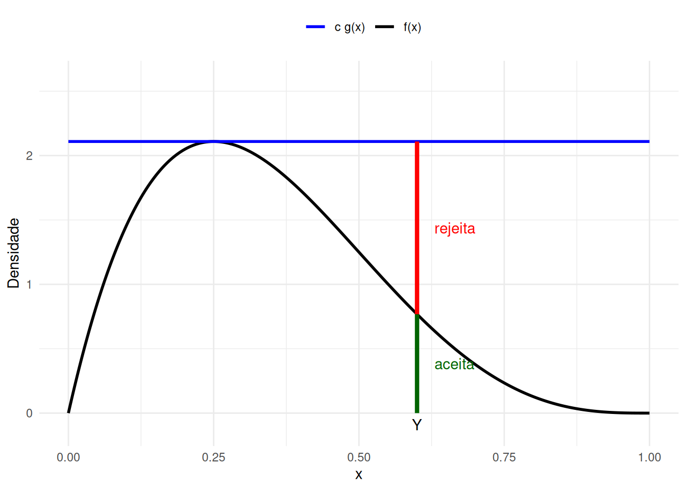
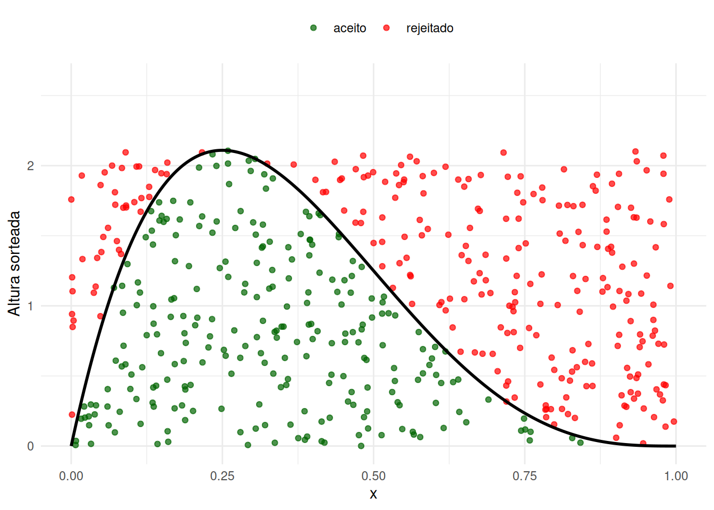
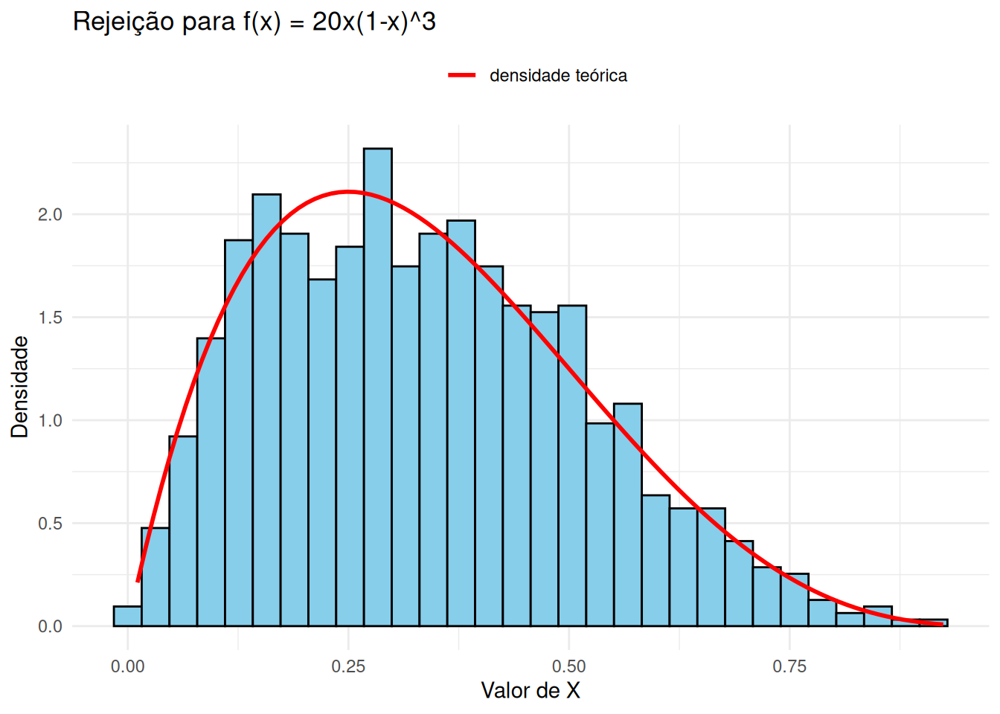
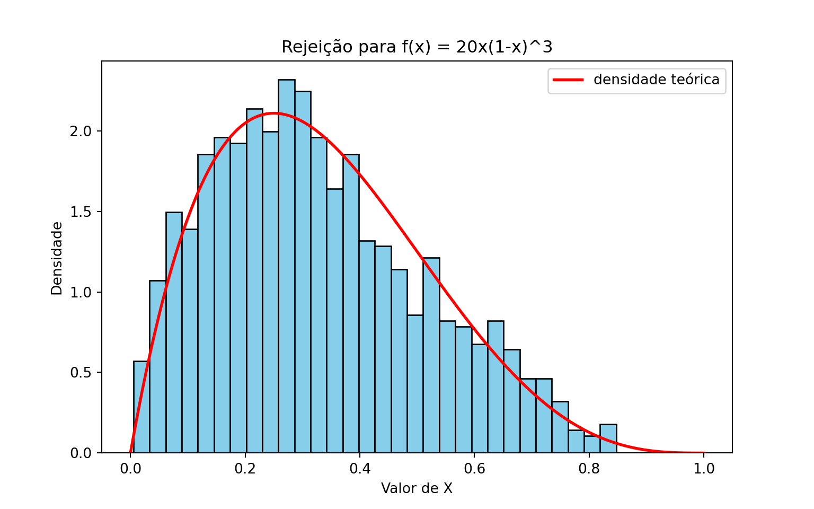
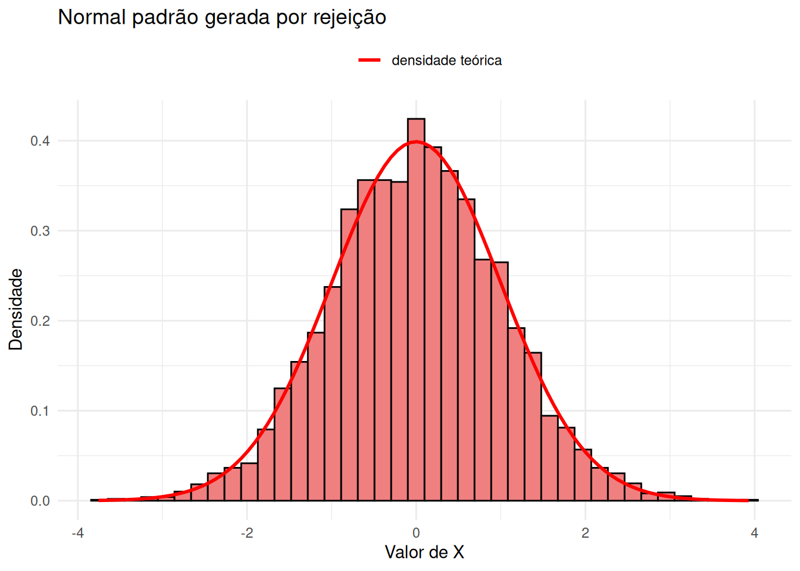
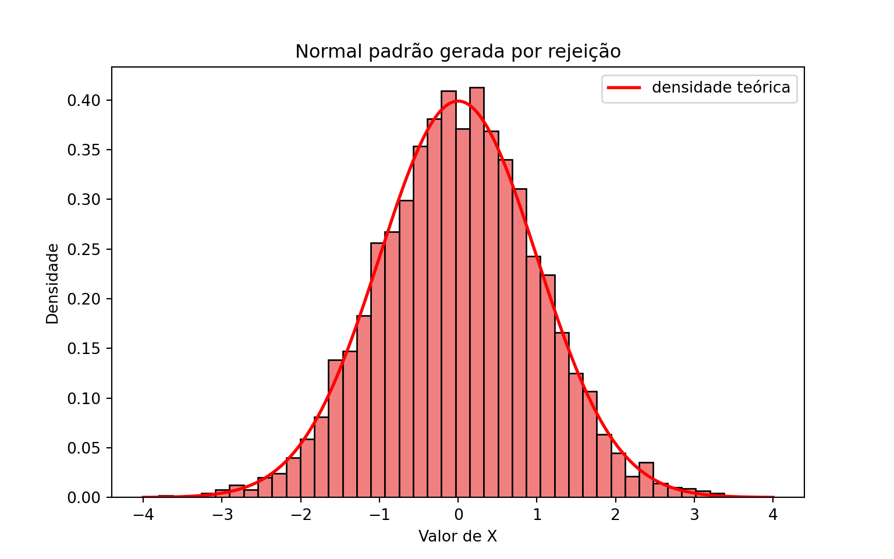

No capítulo anterior usamos o método da rejeição para gerar v.a. discretas: sorteávamos candidatos a partir de uma distribuição fácil de simular e aceitávamos cada candidato com probabilidade proporcional à razão entre o alvo e a proposta. A versão contínua é a mesma ideia, palavra por palavra, trocando as funções de probabilidade \(p_j\) e \(q_j\) por densidades \(f\) e \(g\).
Aqui o método é ainda mais valioso. No Capítulo 4 vimos que a inversão exige uma fórmula explícita para \(F^{-1}\), e avisamos que isso é a exceção: para a normal, por exemplo, nem mesmo \(F\) tem forma fechada. O método da rejeição não precisa de \(F\) nem de \(F^{-1}\) — basta saber calcular a densidade alvo em um ponto e saber simular de alguma outra densidade parecida com ela. Como veremos no Exemplo 2, isso já é suficiente para gerar valores da normal.
6.1 Algoritmo
Seja \(X\) uma v.a. contínua com densidade \(f\); essa é a distribuição alvo. O método supõe que sabemos simular uma segunda v.a. \(Y\), com densidade \(g\), chamada de distribuição proposta.
Atenção: a proposta precisa cobrir o suporte do alvo
É indispensável que \(g(x) > 0\) sempre que \(f(x) > 0\). Se a proposta nunca sugere valores de uma região onde o alvo tem densidade positiva, essa região jamais aparecerá na amostra — e o algoritmo devolve, silenciosamente, uma distribuição errada.
Além disso, supomos conhecida uma constante \(c\) tal que
\[
\frac{f(x)}{g(x)} \leq c \quad \text{para todo } x \text{ com } f(x) > 0.
\]
Exatamente como no caso discreto, necessariamente \(c \geq 1\): integrando a desigualdade \(f(x) \leq c\, g(x)\) sobre o conjunto onde \(f\) é positiva, obtemos
pois a integral de \(g\) sobre um subconjunto da reta é, no máximo, \(1\).
Pseudo-algoritmo: rejeição para v.a. contínuas
Gere \(Y\) a partir da densidade proposta \(g\).
Gere \(U \sim \text{Unif}(0,1)\), independente de \(Y\).
Se \(U \leq \dfrac{f(Y)}{c\, g(Y)}\), devolva \(X = Y\). Caso contrário, descarte \(Y\) e volte ao passo 1.
Como no caso discreto, o passo 3 é apenas um sorteio de Bernoulli: aceitamos o candidato com probabilidade \(f(Y) / (c\, g(Y))\), e é a escolha de \(c\) que garante que esse número esteja entre \(0\) e \(1\).
6.2 Interpretação geométrica
A figura a seguir ilustra o passo 3 no caso em que a proposta é uma \(\text{Unif}(0,1)\), de modo que \(c\,g(x)\) é uma reta horizontal na altura \(c\). Sorteado um candidato \(Y\), olhamos a haste vertical que vai de \(0\) até \(c\, g(Y)\): a parte verde (abaixo de \(f(Y)\)) corresponde a aceitar, e a parte vermelha a rejeitar. O papel de \(U\) é sortear um ponto uniformemente ao longo dessa haste.
library(ggplot2)# Densidade alvo: f(x) = 20 x (1-x)^3, para 0 < x < 1f <-function(x) 20* x * (1- x)^3# Densidade proposta: Unif(0,1). O rep() faz a função servir tanto para um# número quanto para um vetor de valoresg <-function(x) rep(1, length(x))# Menor constante com f(x) <= cte * g(x). Chamamos de `cte` (e não de `c`)# para não esconder a função c() do Rcte <-135/64# Candidato usado apenas para ilustrar o sorteio de aceitaçãoY <-0.6grade <-seq(0, 1, length.out =400)df_curvas <-data.frame(x = grade, f =f(grade), teto = cte *g(grade))ggplot(df_curvas, aes(x = x)) +geom_line(aes(y = f, color ="f(x)"), linewidth =1) +geom_line(aes(y = teto, color ="c g(x)"), linewidth =1) +# A haste em Y vai de 0 até o teto c*g(Y); abaixo de f(Y) aceitamosannotate("segment", x = Y, xend = Y, y =0, yend =f(Y),color ="darkgreen", linewidth =1.5) +annotate("segment", x = Y, xend = Y, y =f(Y), yend = cte *g(Y),color ="red", linewidth =1.5) +annotate("text", x = Y +0.03, y =f(Y) /2, label ="aceita",color ="darkgreen", hjust =0) +annotate("text", x = Y +0.03, y = (f(Y) + cte) /2, label ="rejeita",color ="red", hjust =0) +annotate("text", x = Y, y =-0.09, label ="Y") +scale_color_manual(values =c("f(x)"="black", "c g(x)"="blue"), name ="") +coord_cartesian(ylim =c(-0.12, 2.6)) +labs(x ="x", y ="Densidade") +theme_minimal() +theme(legend.position ="top")

Mostrar código
import numpy as npimport matplotlib.pyplot as plt# Densidade alvo: f(x) = 20 x (1-x)^3, para 0 < x < 1def f(x):return20* x * (1- x)**3# Densidade proposta: Unif(0,1). O ones_like faz a função servir tanto para um# número quanto para um vetor de valoresdef g(x):return np.ones_like(x, dtype=float)# Menor constante com f(x) <= cte * g(x)cte =135/64# Candidato usado apenas para ilustrar o sorteio de aceitaçãoY =0.6grade = np.linspace(0, 1, 400)plt.figure(figsize=(8, 5))plt.plot(grade, f(grade), color="black", label="f(x)")plt.plot(grade, cte * g(grade), color="blue", label="c g(x)")# A haste em Y vai de 0 até o teto c*g(Y); abaixo de f(Y) aceitamosplt.vlines(Y, 0, f(Y), color="darkgreen", linewidth=3)plt.vlines(Y, f(Y), cte * g(Y), color="red", linewidth=3)plt.text(Y +0.03, f(Y) /2, "aceita", color="darkgreen")plt.text(Y +0.03, (f(Y) + cte) /2, "rejeita", color="red")plt.text(Y, -0.09, "Y", horizontalalignment="center")plt.ylim(-0.12, 2.6)
Essa leitura sugere uma segunda maneira de enxergar o método, que costuma ser mais esclarecedora do que a conta. Chame de \(V = U \cdot c\, g(Y)\) a altura sorteada na haste. O par \((Y, V)\) é um ponto sorteado uniformemente na região abaixo da curva \(c\,g\), e o passo 3 mantém apenas os pontos que caem abaixo de \(f\). O gráfico abaixo mostra 500 candidatos e o que acontece com cada um deles.
set.seed(42)n_candidatos <-500# Passo 1: candidatos da proposta Unif(0,1)Y <-runif(n_candidatos)# Passo 2: os uniformes que decidem a aceitaçãoU <-runif(n_candidatos)# Altura sorteada na haste: um ponto uniforme entre 0 e c*g(Y)V <- U * cte *g(Y)# Passo 3: ficamos com os pontos que caíram abaixo da curva faceito <- V <=f(Y)df_pontos <-data.frame(x = Y,altura = V,status =ifelse(aceito, "aceito", "rejeitado"))ggplot(df_pontos, aes(x = x, y = altura, color = status)) +geom_point(size =1.5, alpha =0.7) +geom_line(data = df_curvas, aes(x = x, y = f), inherit.aes =FALSE,linewidth =1) +scale_color_manual(values =c("aceito"="darkgreen", "rejeitado"="red"),name ="") +coord_cartesian(ylim =c(0, 2.6)) +labs(x ="x", y ="Altura sorteada") +theme_minimal() +theme(legend.position ="top")

Mostrar código
np.random.seed(42)n_candidatos =500# Passo 1: candidatos da proposta Unif(0,1)Y = np.random.uniform(0, 1, n_candidatos)# Passo 2: os uniformes que decidem a aceitaçãoU = np.random.uniform(0, 1, n_candidatos)# Altura sorteada na haste: um ponto uniforme entre 0 e c*g(Y)V = U * cte * g(Y)# Passo 3: ficamos com os pontos que caíram abaixo da curva faceito = V <= f(Y)plt.figure(figsize=(8, 5))plt.scatter(Y[aceito], V[aceito], s=12, alpha=0.7, color="darkgreen", label="aceito")plt.scatter(Y[~aceito], V[~aceito], s=12, alpha=0.7, color="red", label="rejeitado")plt.plot(grade, f(grade), color="black", linewidth=1)plt.ylim(0, 2.6)
Os pontos verdes estão espalhados uniformemente na região sob a curva \(f\). E um ponto uniforme sob o gráfico de uma densidade tem uma propriedade notável: sua abscissa tem exatamente essa densidade. A razão é que a região é mais alta onde \(f\) é maior, então mais pontos caem sobre esses valores de \(x\) — na proporção certa.
Ou seja, o método da rejeição pode ser lido assim: para simular de \(f\), sorteie um ponto uniforme sob o gráfico de \(f\) e devolva sua coordenada horizontal. A proposta \(g\) e a constante \(c\) servem só para construir uma região maior, e fácil de sortear, que contenha a região de interesse. O Exercício 8 pede a demonstração desse fato.
6.3 Exemplo 1: uma densidade em \((0,1)\) com proposta uniforme
Queremos gerar valores da densidade
\[
f(x) = 20x(1 - x)^3, \quad 0 < x < 1,
\]
que é a densidade de uma \(\text{Beta}(2,4)\). Como o suporte é o intervalo \((0,1)\), a escolha mais simples de proposta é \(g(x) = 1\) para \(0 < x < 1\), isto é, \(Y \sim \text{Unif}(0,1)\).
Nesse caso a razão \(f(x)/g(x)\) é a própria \(f(x)\), e a menor constante possível é o valor máximo da densidade. Derivando,
Se \(U \leq \dfrac{20\,Y(1-Y)^3}{135/64}\), devolva \(X = Y\). Caso contrário, volte ao passo 1.
O código a seguir gera \(B = 1000\) valores. Além das amostras aceitas, contamos quantos candidatos foram necessários, para comparar a taxa de aceitação observada com o valor teórico \(1/c\).
library(ggplot2)set.seed(42)f <-function(x) 20* x * (1- x)^3g <-function(x) 1# densidade da Unif(0,1)cte <-135/64B <-1000# quantos valores queremos geraramostras <-c() # guarda os valores aceitosn_propostas <-0# conta quantas vezes o passo 1 foi executadowhile (length(amostras) < B) {# Passo 1: gerar Y da proposta Unif(0,1) Y <-runif(1) n_propostas <- n_propostas +1# Passo 2: gerar U ~ Unif(0,1) U <-runif(1)# Passo 3: aceitar Y com probabilidade f(Y) / (cte * g(Y))if (U <=f(Y) / (cte *g(Y))) { amostras <-c(amostras, Y) }}cat("Candidatos gerados:", n_propostas, "\n")
Candidatos gerados: 2081
Mostrar código
cat("Taxa de aceitação observada:", round(B / n_propostas, 3), "\n")
Taxa de aceitação observada: 0.481
Mostrar código
cat("Taxa de aceitação teórica (1/c):", round(1/ cte, 3), "\n")
Taxa de aceitação teórica (1/c): 0.474
Mostrar código
df <-data.frame(x = amostras)ggplot(df, aes(x = x)) +geom_histogram(aes(y =after_stat(density)), bins =30,fill ="skyblue", color ="black") +# A curva vermelha é a densidade alvo: o histograma deve acompanhá-lastat_function(aes(color ="densidade teórica"), fun = f, linewidth =1) +scale_color_manual(values =c("densidade teórica"="red"), name ="") +labs(title ="Rejeição para f(x) = 20x(1-x)^3",x ="Valor de X", y ="Densidade") +theme_minimal() +theme(legend.position ="top")

Mostrar código
import numpy as npimport matplotlib.pyplot as pltnp.random.seed(42)def f(x):return20* x * (1- x)**3def g(x):return1.0# densidade da Unif(0,1)cte =135/64B =1000# quantos valores queremos geraramostras = [] # guarda os valores aceitosn_propostas =0# conta quantas vezes o passo 1 foi executadowhilelen(amostras) < B:# Passo 1: gerar Y da proposta Unif(0,1) Y = np.random.uniform(0, 1) n_propostas +=1# Passo 2: gerar U ~ Unif(0,1) U = np.random.uniform(0, 1)# Passo 3: aceitar Y com probabilidade f(Y) / (cte * g(Y))if U <= f(Y) / (cte * g(Y)): amostras.append(Y)amostras = np.array(amostras)print("Candidatos gerados:", n_propostas)
Candidatos gerados: 2084
Mostrar código
print("Taxa de aceitação observada:", round(B / n_propostas, 3))
Taxa de aceitação observada: 0.48
Mostrar código
print("Taxa de aceitação teórica (1/c):", round(1/ cte, 3))
Taxa de aceitação teórica (1/c): 0.474
Mostrar código
# Malha usada só para desenhar a densidade teóricagrade = np.linspace(0, 1, 400)plt.figure(figsize=(8, 5))plt.hist(amostras, bins=30, density=True, color="skyblue", edgecolor="black")# A curva vermelha é a densidade alvo: o histograma deve acompanhá-laplt.plot(grade, f(grade), color="red", linewidth=2, label="densidade teórica")plt.title("Rejeição para f(x) = 20x(1-x)^3")plt.xlabel("Valor de X")plt.ylabel("Densidade")plt.legend()plt.show()

6.4 Exemplo 2: gerando uma normal a partir de exponenciais
Este é o exemplo que a inversão não conseguia resolver. Queremos gerar \(X \sim N(0,1)\), cuja f.d.a. não tem forma fechada — muito menos sua inversa.
A ideia é gerar primeiro o módulo\(|X|\) e depois sortear o sinal. Se \(X \sim N(0,1)\), a densidade de \(|X|\) é o dobro da densidade da normal restrita aos valores positivos:
\[
f(x) = \sqrt{\frac{2}{\pi}}\, e^{-x^2/2}, \quad x > 0.
\]
Como proposta, usamos \(Y \sim \text{Exp}(1)\), com densidade \(g(x) = e^{-x}\) para \(x > 0\) — uma distribuição que já sabemos simular por inversão (Capítulo 4) e que, como o alvo, tem suporte em \((0, \infty)\) e cai a zero na cauda direita. A razão entre as duas densidades é
library(ggplot2)set.seed(42)# A constante c só é usada no relatório final: o critério do passo 3 já está# escrito na forma simplificadacte <-sqrt(2*exp(1) / pi)B <-5000# quantos valores queremos gerarmodulos <-c() # guarda os valores aceitos de |X|n_propostas <-0while (length(modulos) < B) {# Passo 1: Y ~ Exp(1), gerada por inversão (Capítulo 4) U1 <-runif(1) Y <--log(1- U1) n_propostas <- n_propostas +1# Passo 2: o uniforme que decide a aceitação U <-runif(1)# Passo 3: a razão f(Y) / (c * g(Y)) se simplifica para exp(-(Y-1)^2 / 2)if (U <=exp(-(Y -1)^2/2)) { modulos <-c(modulos, Y) }}# Passo 4: cada módulo recebe um sinal + ou - com probabilidade 1/2sinais <-sample(c(-1, 1), size = B, replace =TRUE)X <- sinais * moduloscat("Candidatos gerados:", n_propostas, "\n")
Candidatos gerados: 6610
Mostrar código
cat("Taxa de aceitação observada:", round(B / n_propostas, 3), "\n")
Taxa de aceitação observada: 0.756
Mostrar código
cat("Taxa de aceitação teórica (1/c):", round(1/ cte, 3), "\n")
Taxa de aceitação teórica (1/c): 0.76
Mostrar código
cat("Média e desvio padrão amostrais:", round(mean(X), 3), round(sd(X), 3), "\n")
Média e desvio padrão amostrais: 0 1.01
Mostrar código
df <-data.frame(x = X)ggplot(df, aes(x = x)) +geom_histogram(aes(y =after_stat(density)), bins =40,fill ="lightcoral", color ="black") +# A curva vermelha é a densidade da N(0,1), o alvo deste exemplostat_function(aes(color ="densidade teórica"), fun = dnorm, linewidth =1) +scale_color_manual(values =c("densidade teórica"="red"), name ="") +labs(title ="Normal padrão gerada por rejeição",x ="Valor de X", y ="Densidade") +theme_minimal() +theme(legend.position ="top")

Mostrar código
import numpy as npimport matplotlib.pyplot as pltfrom scipy.stats import normnp.random.seed(42)# A constante c só é usada no relatório final: o critério do passo 3 já está# escrito na forma simplificadacte = np.sqrt(2* np.exp(1) / np.pi)B =5000# quantos valores queremos gerarmodulos = [] # guarda os valores aceitos de |X|n_propostas =0whilelen(modulos) < B:# Passo 1: Y ~ Exp(1), gerada por inversão (Capítulo 4) U1 = np.random.uniform(0, 1) Y =-np.log(1- U1) n_propostas +=1# Passo 2: o uniforme que decide a aceitação U = np.random.uniform(0, 1)# Passo 3: a razão f(Y) / (c * g(Y)) se simplifica para exp(-(Y-1)^2 / 2)if U <= np.exp(-(Y -1)**2/2): modulos.append(Y)modulos = np.array(modulos)# Passo 4: cada módulo recebe um sinal + ou - com probabilidade 1/2sinais = np.random.choice([-1, 1], size=B)X = sinais * modulosprint("Candidatos gerados:", n_propostas)
Candidatos gerados: 6558
Mostrar código
print("Taxa de aceitação observada:", round(B / n_propostas, 3))
Taxa de aceitação observada: 0.762
Mostrar código
print("Taxa de aceitação teórica (1/c):", round(1/ cte, 3))
Taxa de aceitação teórica (1/c): 0.76
Mostrar código
print("Média e desvio padrão amostrais:",round(X.mean(), 3), round(X.std(ddof=1), 3))
Média e desvio padrão amostrais: 0.008 1.002
Mostrar código
# Malha usada só para desenhar a densidade teóricagrade = np.linspace(-4, 4, 400)plt.figure(figsize=(8, 5))plt.hist(X, bins=40, density=True, color="lightcoral", edgecolor="black")# A curva vermelha é a densidade da N(0,1), o alvo deste exemploplt.plot(grade, norm.pdf(grade), color="red", linewidth=2, label="densidade teórica")plt.title("Normal padrão gerada por rejeição")plt.xlabel("Valor de X")plt.ylabel("Densidade")plt.legend()plt.show()

6.5 Por que o método funciona
Proposição
Suponha que \(g(x) > 0\) sempre que \(f(x) > 0\) e que \(f(x)/g(x) \leq c\) para todo \(x\) com \(f(x) > 0\). Então:
o valor \(X\) devolvido pelo método da rejeição tem densidade \(f\);
o número \(N\) de candidatos gerados até o primeiro aceite tem distribuição geométrica com probabilidade de sucesso \(1/c\). Em particular, \(\mathbb{E}[N] = c\).
Demonstração
Seja \(Y\) o candidato gerado em um passo qualquer do algoritmo e \(U\) o uniforme correspondente. Condicionando no valor de \(Y\), a probabilidade de aceitar é
em que \(F\) é a f.d.a. do alvo. Fazendo \(x \to \infty\) e usando que \(F(\infty) = 1\),
\[
\mathbb{P}(\text{aceitar}) = \frac{1}{c}.
\]
Como os passos do algoritmo são independentes e cada um aceita com probabilidade \(1/c\), o número \(N\) de candidatos até o primeiro aceite tem distribuição geométrica com probabilidade de sucesso \(1/c\), e portanto \(\mathbb{E}[N] = c\). Isso prova (ii).
Para (i), o valor devolvido é o candidato do passo em que houve aceite, ou seja, \(Y\) condicionado ao aceite. Pela definição de probabilidade condicional,
Portanto \(X\) tem f.d.a. \(F\), isto é, densidade \(f\). \(\square\)
Repare que a demonstração usa \(f\) e \(g\) apenas através da razão \(f/g\). Isso tem uma consequência prática grande, explorada no Exercício 3: se conhecemos o alvo apenas a menos de uma constante de normalização — sabemos calcular \(f^*\), mas não a constante \(k\) com \(f = k f^*\) — o método continua funcionando. Basta achar \(c'\) com \(f^*(x) \leq c' g(x)\) e usar o critério \(U \leq f^*(Y)/(c'\,g(Y))\), que é idêntico ao original com \(c = k\,c'\).
6.6 Eficiência e escolha da distribuição proposta
O item (ii) diz que, para gerar um valor do alvo, o algoritmo gasta em média \(c\) candidatos; equivalentemente, a fração aceita é \(1/c\). Toda a eficiência do método está nessa única constante, e \(c\) depende só de \(f\) e \(g\) — não do tamanho da amostra que queremos gerar.
Na leitura geométrica da seção anterior, \(1/c\) é uma razão de áreas: a região sob \(f\) tem área \(1\), a região sob \(c\,g\) tem área \(c\), e aceitamos os pontos que caem na primeira. Quanto mais justo o “envelope” \(c\,g\) ficar em volta de \(f\), menos área desperdiçada e mais eficiente o algoritmo. No Exemplo 1, \(c \approx 2{,}11\): o retângulo de altura \(2{,}11\) tem mais que o dobro da área sob \(f\), e por isso rejeitamos mais da metade dos candidatos. No Exemplo 2 a proposta exponencial acompanha bem melhor o formato do alvo, e \(c \approx 1{,}32\).
Há duas armadilhas frequentes na escolha de \(g\).
Atenção: a proposta precisa ter caudas mais pesadas que o alvo
Se \(g\) vai a zero mais rápido que \(f\) quando \(|x| \to \infty\), a razão \(f/g\) explode e não existe constante \(c\) válida. É o que acontece, por exemplo, ao tentar usar uma normal como proposta para uma Cauchy: a densidade da normal decai como \(e^{-x^2/2}\), e a da Cauchy apenas como \(1/x^2\). Na direção contrária — Cauchy como proposta para gerar uma normal — a razão é limitada e o método funciona bem (Exercício 6).
Atenção: uma proposta espalhada demais custa caro
Mesmo quando \(c\) existe, ele pode ser grande. No Exemplo 1, se usássemos \(Y \sim \text{Unif}(0,3)\) — que também cobre o suporte de \(f\) — teríamos \(g(x) = 1/3\) e \(c = 3 \times 135/64 \approx 6{,}33\): o mesmo resultado a um custo três vezes maior, porque dois terços dos candidatos cairiam fora de \((0,1)\) e seriam rejeitados na certa.
Por fim, nem sempre o máximo de \(f/g\) sai no papel. Quando não sair, calcule a razão em uma grade fina de pontos, ou use uma rotina de otimização numérica (optimize em R, scipy.optimize.minimize_scalar em Python), como pede o Exercício 7.
6.7 Exercícios
Exercício 1. Seja \(X \sim \text{Gama}(3/2, 1)\), com densidade
Usando como proposta a \(\text{Unif}(0, \pi)\), isto é, \(g(x) = 1/\pi\), encontre a menor constante \(c\) tal que \(f(x) \leq c\, g(x)\) para todo \(x \in [0, \pi]\).
Implemente o método e gere \(B = 5000\) valores. Compare o histograma com a densidade teórica e a taxa de aceitação observada com \(1/c\).
que é uma \(\text{Beta}(2,2)\) reescalada para o intervalo \([0,\pi]\). Verifique que \(g_2\) integra \(1\) e mostre que a razão \(f(x)/g_2(x)\) é máxima em \(x = \pi/2\), com \(c_2 = \pi/3\).
Compare \(1/c\) com \(1/c_2\). Qual das duas propostas é mais eficiente, e por quê? Olhe o formato das duas propostas ao lado do de \(f\).
Para usar \(g_2\) seria preciso saber simular dela. Explique por que isso não é imediato, e sugira um caminho (dica: qual método deste livro gera uma \(\text{Beta}(2,2)\)?).
Exercício 3. Muitas vezes conhecemos a densidade alvo apenas a menos de uma constante de normalização: sabemos calcular \(f^*\), mas não a constante \(k\) tal que \(f = k f^*\). Considere
\[
f^*(x) = e^{-x} \sin^2(x), \quad x > 0,
\]
e use como proposta a \(\text{Exp}(1)\), ou seja, \(g(x) = e^{-x}\) para \(x > 0\).
Mostre que \(f^*(x)/g(x) = \sin^2(x)\) e conclua que \(c' = 1\) serve.
Escreva o pseudo-algoritmo usando apenas \(f^*\), \(g\) e \(c'\), e explique por que ele não depende de \(k\).
Implemente o algoritmo e gere \(B = 5000\) valores. Construa o histograma de densidade.
Calcule \(k\) exatamente, usando que \(\sin^2 x = (1 - \cos 2x)/2\) e que \(\int_0^\infty e^{-x}\cos(2x)\, dx = 1/5\). Sobreponha \(f = k f^*\) ao histograma do item (c).
(Desafio) Pela proposição, a taxa de aceitação estima \(1/c = 1/(k c')\). Use a taxa observada no item (c) para construir uma estimativa \(\hat{k}\) e compare com o valor exato. Repare que acabamos de estimar uma integral sem nunca tê-la calculado.
Exercício 4. Seja \(Z \sim N(0,1)\) e considere como alvo a distribuição de \(Z\)condicionada a \(Z \geq 2\), cuja densidade é
onde \(\varphi\) e \(\Phi\) são a densidade e a f.d.a. da \(N(0,1)\).
Usando a própria \(N(0,1)\) como proposta, mostre que \(f(x)/\varphi(x) = 1/(1 - \Phi(2))\) para \(x \geq 2\) e \(0\) caso contrário. Conclua que \(c = 1/(1 - \Phi(2))\) e calcule seu valor (pnorm em R, scipy.stats.norm.cdf em Python).
Mostre que, com esse \(c\), a probabilidade de aceitação vale \(1\) quando \(y \geq 2\) e \(0\) caso contrário — ou seja, o algoritmo se reduz a “gere normais até obter uma maior ou igual a 2”. Implemente e gere \(B = 2000\) valores, registrando o número médio de candidatos.
Considere agora a proposta exponencial deslocada, com densidade \(g_\lambda(x) = \lambda e^{-\lambda(x - 2)}\) para \(x \geq 2\), que se simula fazendo \(Y = 2 + \text{Exp}(\lambda)\). Mostre que \(f(x)/g_\lambda(x) \propto e^{-x^2/2 + \lambda x}\) e que essa razão é limitada para todo \(\lambda > 0\). Onde está o máximo quando \(\lambda \geq 2\)?
Calcule \(c(\lambda)\) para \(\lambda\) em uma grade de \(2\) a \(5\) e faça um gráfico de \(c(\lambda)\) contra \(\lambda\). Implemente o método com o \(\lambda\) que minimiza \(c\) e compare a taxa de aceitação com a do item (b).
(Desafio) Mostre analiticamente que o \(\lambda\) ótimo é \(\lambda^* = 1 + \sqrt{2}\). O que esse exercício sugere sobre usar rejeição para amostrar de eventos raros?
Exercício 5. Este exercício explora diretamente a leitura geométrica do método: em vez de uma densidade na reta, vamos sortear um ponto uniformemente em uma região do plano.
Queremos gerar um ponto \((X_1, X_2)\) uniformemente distribuído no disco unitário \(D = \{(x_1,x_2): x_1^2 + x_2^2 \leq 1\}\), isto é, com densidade conjunta \(f(x_1,x_2) = 1/\pi\) em \(D\). Como proposta, sorteamos um ponto uniforme no quadrado \([-1,1]^2\), cuja densidade conjunta é \(g(x_1,x_2) = 1/4\).
Mostre que \(f/g = 4/\pi\) dentro do disco e \(0\) fora dele, e conclua que \(c = 4/\pi\). Verifique que o critério do passo 3 se reduz a “aceite se o ponto caiu dentro do disco”.
Implemente o algoritmo, gere \(B = 5000\) pontos e faça um gráfico de dispersão.
A taxa de aceitação é \(1/c = \pi/4\). Use isso ao contrário: a partir da taxa observada, construa um estimador \(\hat{\pi}\) e compare com o valor de \(\pi\).
(Desafio) O mesmo raciocínio vale em \(d\) dimensões: sorteie um ponto no cubo \([-1,1]^d\) e aceite se ele cair na bola unitária. O volume da bola é \(V_d = \pi^{d/2}/\Gamma(d/2 + 1)\), de modo que a taxa de aceitação é \(V_d/2^d\). Calcule essa taxa para \(d = 2, 5, 10\) e \(20\). O que isso diz sobre usar rejeição em dimensão alta?
Exercício 6. Vamos verificar a afirmação sobre caudas feita no texto. Sejam \(f\) a densidade da \(N(0,1)\) e \(g\) a densidade da Cauchy padrão,
e que essa razão é máxima em \(x = \pm 1\), com \(c = \sqrt{2\pi/e} \approx 1{,}52\).
Sabendo que a f.d.a. da Cauchy é \(G(x) = \frac{1}{2} + \frac{1}{\pi}\arctan(x)\), mostre que \(G^{-1}(u) = \tan\!\left(\pi(u - 1/2)\right)\) e escreva o pseudo-algoritmo completo (inversão para a proposta, rejeição para o alvo).
Implemente e gere \(B = 5000\) valores. Compare o histograma com a densidade da normal e a taxa de aceitação com \(1/c\).
Troque os papéis: alvo Cauchy, proposta \(N(0,1)\). Mostre que a razão \(f(x)/g(x)\) é ilimitada e que, portanto, não existe \(c\) válido. Faça um gráfico dessa razão para \(x \in [0, 6]\) para visualizar o problema.
Compare a eficiência do item (c) com a do Exemplo 2 do capítulo. Qual das duas propostas se ajusta melhor à normal?
Exercício 7. Nos exemplos do capítulo conseguimos maximizar \(f/g\) no papel. Aqui não. Considere a densidade conhecida a menos de constante
e use como proposta uma \(N(0, 2^2)\), isto é, uma normal de média \(0\) e desvio padrão \(2\).
Faça um gráfico de \(f^*\) no intervalo \([-6, 6]\). Quantos modos ela tem? Convença-se de que inverter a f.d.a. aqui está fora de questão.
Escreva a razão \(r(x) = f^*(x)/g(x)\) e mostre que ela é limitada. (Dica: compare o expoente \(-x^2/2\) da alvo com o \(-x^2/8\) da proposta.)
Calcule \(r(x)\) em uma grade fina de \([-10, 10]\) e tome \(c'\) como o máximo observado. Confirme o resultado com optimize (R) ou scipy.optimize.minimize_scalar (Python).
Implemente o método e gere \(B = 5000\) valores. Sobreponha ao histograma a curva \(f^*\)reescalada de modo a integrar \(1\) (você pode obter a constante por integração numérica, com integrate em R ou scipy.integrate.quad em Python).
Qual a taxa de aceitação observada? Explique por que a \(N(0,1)\)não serviria como proposta aqui.
(Desafio) Se a grade do item (c) fosse grosseira, \(c'\) poderia ficar abaixo do máximo verdadeiro. O que aconteceria com a distribuição gerada? (Compare com o Exercício 7(d) do capítulo anterior.)
Exercício 8. (Desafio) Este exercício formaliza a leitura geométrica do método. Seja \(f\) uma densidade e
\[
A = \{(x, v) \in \mathbb{R}^2 : 0 \leq v \leq f(x)\}
\]
a região sob o seu gráfico, que tem área \(\int f(x)\, dx = 1\).
Suponha que \((X, V)\) seja um ponto sorteado uniformemente em \(A\). Mostre que a densidade marginal de \(X\) é \(f\). (Dica: a densidade conjunta de \((X,V)\) é constante e igual a \(1\) em \(A\); integre em \(v\).)
No algoritmo do capítulo, seja \(Y\) o candidato e \(V = U \cdot c\, g(Y)\). Mostre que \((Y, V)\) é uniforme na região sob \(c\,g\).
Conclua que, condicionado ao aceite, o par \((Y, V)\) é uniforme em \(A\) e que, portanto, o valor devolvido tem densidade \(f\) — uma demonstração alternativa da parte (i) da proposição.
Interprete \(1/c\) como razão entre as áreas de \(A\) e da região sob \(c\,g\).
Volte ao Exemplo 2 e considere a proposta \(\text{Exp}(\lambda)\), com \(\lambda > 0\) qualquer. Mostre que
e que essa função é minimizada em \(\lambda = 1\) — ou seja, a escolha feita no capítulo é a melhor possível dentro da família exponencial. Faça o gráfico de \(c(\lambda)\) para confirmar.